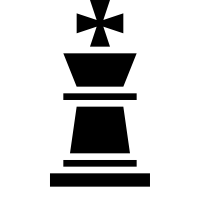

KRÓL
Najważniejszą szachową figurą jest król. Znajduje się na początku gry zawsze centralnie, na polu o przeciwnym kolorze do siebie. Może on poruszać się wzdłuż, wszerz i po skosach, lecz tylko po jednym polu. W momencie, gdy król znajduje się w szachu i nie ma pola do ucieczki, gra się kończy matem. Trzeba zatem szczególnie go chronić przed wrogimi figurami. Dobrym sposobem na skuteczną protekcję króla jest wczesna roszada.
HETMAN
Hetman, zwany potocznie królową, jest drugą najważniejszą figurą na szachownicy. Występuje u boku króla - na polu o takim samym kolorze, jak bierki gracza. Posiada zasób ruchów taki, jak król, z tą różnicą, że może poruszać się tyle pól, ile chce (tzn. tam, gdzie jest wolne pole). Jest to najważniejsza figura z punktu widzenia działań ofensywnych i defensywnych na szachownicy. Jego utrata to bolesny cios dla gracza.
WIEŻA

Wieża jest figurą, która występuje dwukrotnie u każdego z graczy. Zajmuje na starcie rozgrywki miejsca w rogach szachownicy. Może poruszać się po wolnych polach szachownicy wzdłuż i wszerz.
GONIEC

Goniec, zwany także laufrem, również występuje dwukrotnie na szachownicy (przy królu i hetmanie). Może poruszać się po wolnych polach skośnie. Jeden goniec jest białopolowy (porusza się po przekątnych białego koloru), a drugi czarnopolowy.
SKOCZEK
Skoczek występuje, jak wieża i goniec, dwukrotnie u każdego z graczy. Zajmuje miejsca między gońcem a wieżą. Jest unikatową figurą ze względu na poruszanie się - potrafi przeskoczyć ponad innymi figurami, a zakres ruchu skoczka wyznacza litera "L". Może on na przykład wykonać jeden ruch w prawo i dwa w górę lub w dół albo dwa w lewo i jeden w górę lub w dół. Skoczka nie ogranicza żadna figura - może stanąć tam, gdzie chce. Ogranicza go tylko własny zasięg.
PION
Jedyna nie-figura szachowa. Pion występuje aż ośmiokrotnie u każdego z graczy. Piony tworzą linię przed figurami graczy na przedostatnich liniach szachownicy i zajmują całą jej szerokość. Pierwszy ruch danego piona może się odbyć na jedno lub dwa pola naprzód (zależy to od woli gracza). Piony mogą poruszać się wyłącznie naprzód, a bić inne figury mogą wyłącznie na skos. Wyjątkowym przypadkiem bicia jest tzw. "bicie w przelocie", gdzie jeśli pion przeciwnika ruszy się o dwa pola naprzód i zatrzyma na wysokości naszego, to nasz pion może wskoczyć za tego przeciwnika, jednocześnie go bijąc.
WARTOŚCI BIEREK
Każda z bierek ma swoją wartość punktową, co ukazuje poniższa tabela:
| Bierka | Wartość punktowa |
|---|---|
| Król | Nieskończona (Nie można przypisać - król nie może być zbity) |
| Hetman | 9 punktów |
| Wieża | 5 punktów |
| Goniec | 3 punkty |
| Skoczek | 3 punkty |
| Pion | 1 punkt |